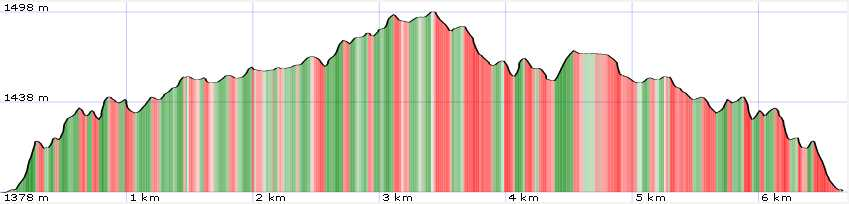
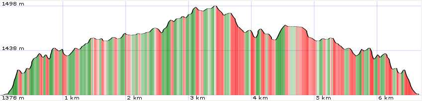

Scheda informativa
Map

| data fields | Note |
|---|---|
| number | 008 |
| suitable for |
|
| degree of difficulty |
|
| distance | 7 km |
| hiking time | 2h |
| difference in altitude | 200 mt D+ and 200 mt D- |
| periodo consigliato |
|
| tRoad surface | dirt road |

